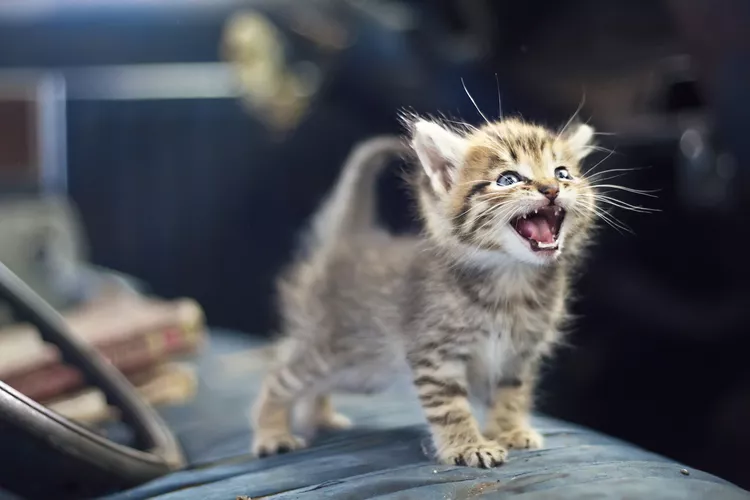

HOW CATS SHOW THEIR AFFECTION ?

-
Purring
The most obvious and common way cats show their happiness and love is through purring. Cats seem to have a special little motor inside them that get started when they are relaxed and enjoying something. You’ll often hear this rumbling, vibrating noise while you are petting your cat. Purrs can also mean your cat is upset but it's not as common. 
-
Rolling
Children tend to throw themselves on the ground and roll around during a tantrum, but when your cat does it, it means they are excited to see you. Cats may walk or run up to you and throw themselves on the ground and begin to roll around. This is a loving greeting and means they want your attention, especially if they show you their belly.
-
Bunting
Bunting is when your cat rubs their cheeks on you or an object, head-butts you with their forehead, or rubs their head on you. It's a way for your cat to leave his scent on you, marking their territory. Cats do this when they love something or someone. They may practice bunting on other pets or their favorite humans.
-
Scratching

Scratching leaves both scented and visual marks of ownership to a cat. Pay attention to where your cat scratches the most. The areas most important to a cat are often associated with the owner. 
-
Kneading
Kneading behaviors hearken back to ​kittenhood. Kitten paws knead against the mother cat’s breasts to induce milk to be released. Adult cats continue this behavior when they’re feeling most relaxed, content, and loved. That’s often when they're being petted on their owner’s lap. Think of kneading as a distinct expression of adoration.
-
Hunting and Gifting Prey

Cats are adorable but they're still tiny carnivores who have hunting instincts. Cats may catch everything from toys to mice and they often share their bounty with those they love. Cats who present you with a catch deserve praise. They wouldn’t bring these special gifts if they didn’t love you.
-
Playing

Kittens play out of pure enjoyment and their most favorite playmate is typically a trusted and loved companion. Some cats may actually control the interaction by moving just out of reach so you are forced to come to them and start playing.
-
Sleeping

Cats typically sleep up to 16 hours a day. Since they are the most vulnerable while sleeping, the place your cat chooses to snooze must be a secure and trusted location. There is no greater loving compliment than a cat picking your lap as their favorite sleep spot.
-
Loving Eyes

A kitty’s eyes are proportionately huge. As such, cat eyes are important assets for survival, yet extremely vulnerable. Cats that place their faces and wide-open eyes near a person are expressing great trust and love. A slow “eye blink” from across the room is considered a cat kiss.
-
Tail Posture

If you've ever petted a cat, you've probably encountered the “elevator butt” pose which invites you to pay particular attention to the base of the tail. Cats love to have this body area scratched. They also use their upright tails to signal their love. When a cat approaches you with their tail held straight up and the end slightly tipped over, it's a sign of love. A cat that holds their rear end up in your face is also showing a sign of affection. Kittens greet their mother with tails flagged high in respect and adult cats continue this behavior with their favorite people.
-
Meowing
Cats rarely meow at other cats. Typically, only kittens meow to their mothers and they grow out of the habit as adults. Your adult cat uses these vocalizations specifically to interact with people. Just like us, cats don't "talk" to people they dislike, so even when your cat pesters you with lots of meows, remember that they are interacting with you out of love.
-
Licking
Cats spend an enormous amount of time self-grooming and friendly cats also groom each other. Cats that groom their favorite people, by licking their skin or hair or even nibbling or sucking on their clothing, indicate great affection. This spreads a familiar scent and helps mark their person as an important part of the family group.